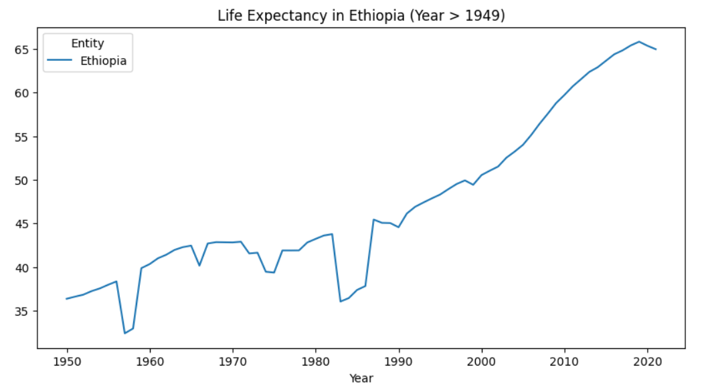

In this project, I developed a Linear Regression model to predict house rent
prices in Nairobi based on factors such as the number of bedrooms, number of
washrooms, location, and neighborhood. I collected and processed rental data,
performed Exploratory Data Analysis (EDA), and built a predictive model to estimate rental prices
amet nullam sed etiam veroeros.

🚀 Life Expectancy Analysis: Uncovering Key Insights 🌍📊
In this project, I explored global life expectancy trends using Python, diving deep into the factors that influence short life span. Through data analysis, visualization, and predictive modeling, I uncovered key insights on how economic, social, and health-related variables impact life expectancy across different countries.
This project predicts automotive prices using a multilinear regression model. The analysis involves data exploration, handling missing values, and feature engineering techniques such as one-hot encoding and variance inflation factor (VIF) analysis to address multicollinearity. To prevent the curse of dimensionality, PCA and heatmaps were applied. Ridge Regression was used for improved generalization. Key findings indicate that features like engine type, fuel system, and body style influence price, with convertible body style and rear engine location increasing predicted prices, while wagon body style tends to lower them. This model assists not only automakers and dealers in pricing strategies but also buyers in estimating prices based on their preferences.